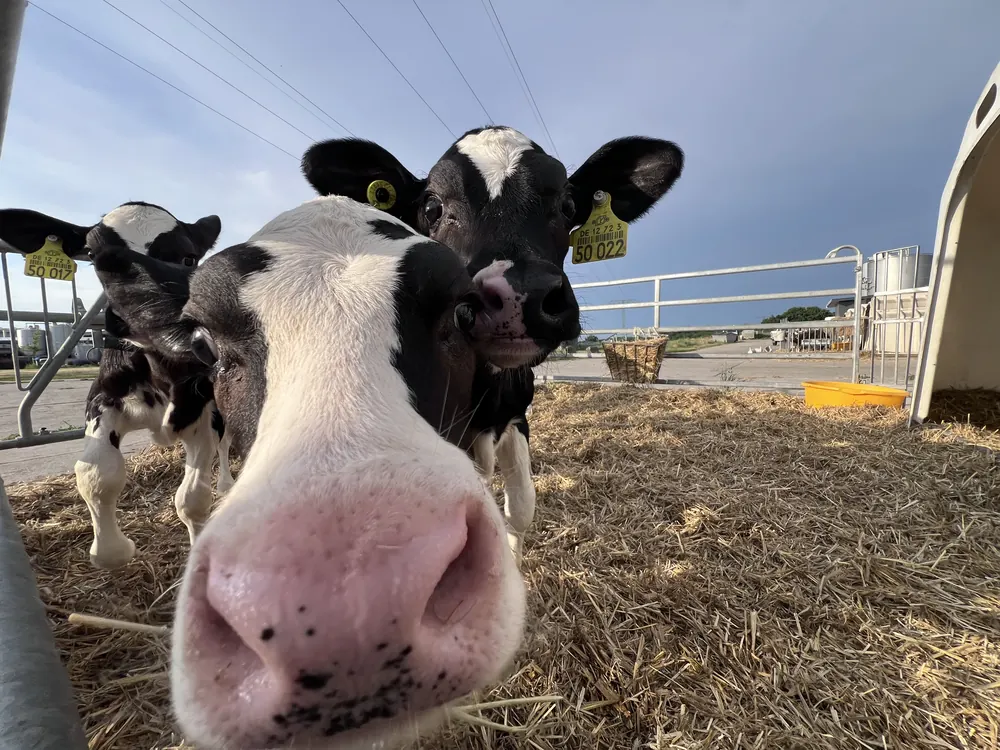
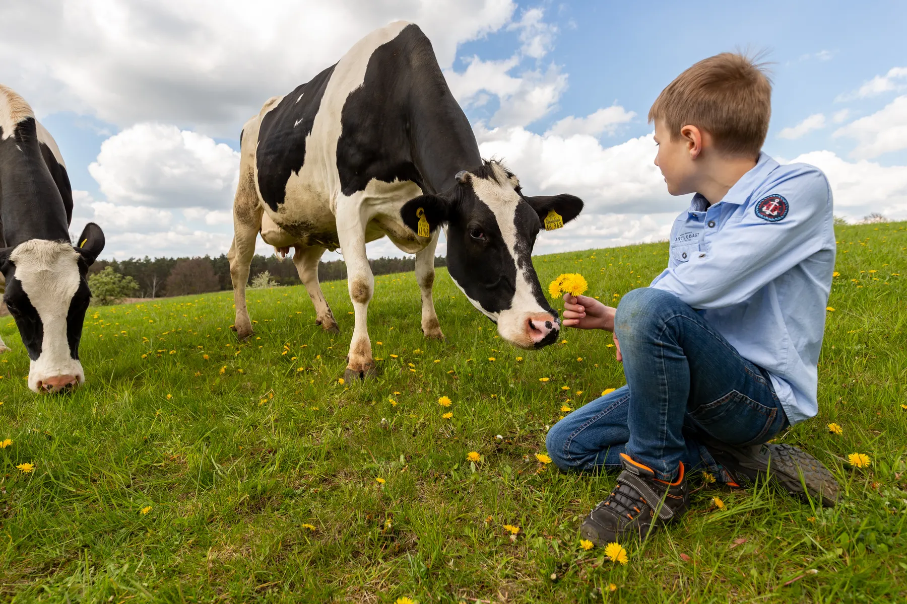
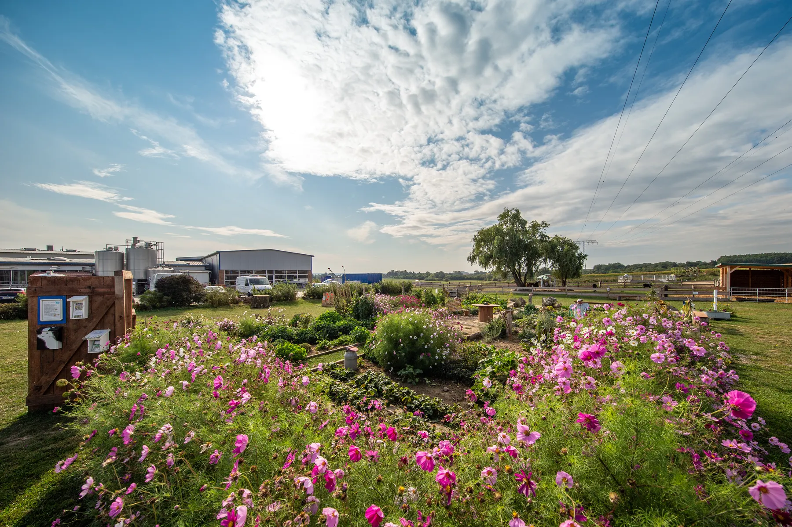
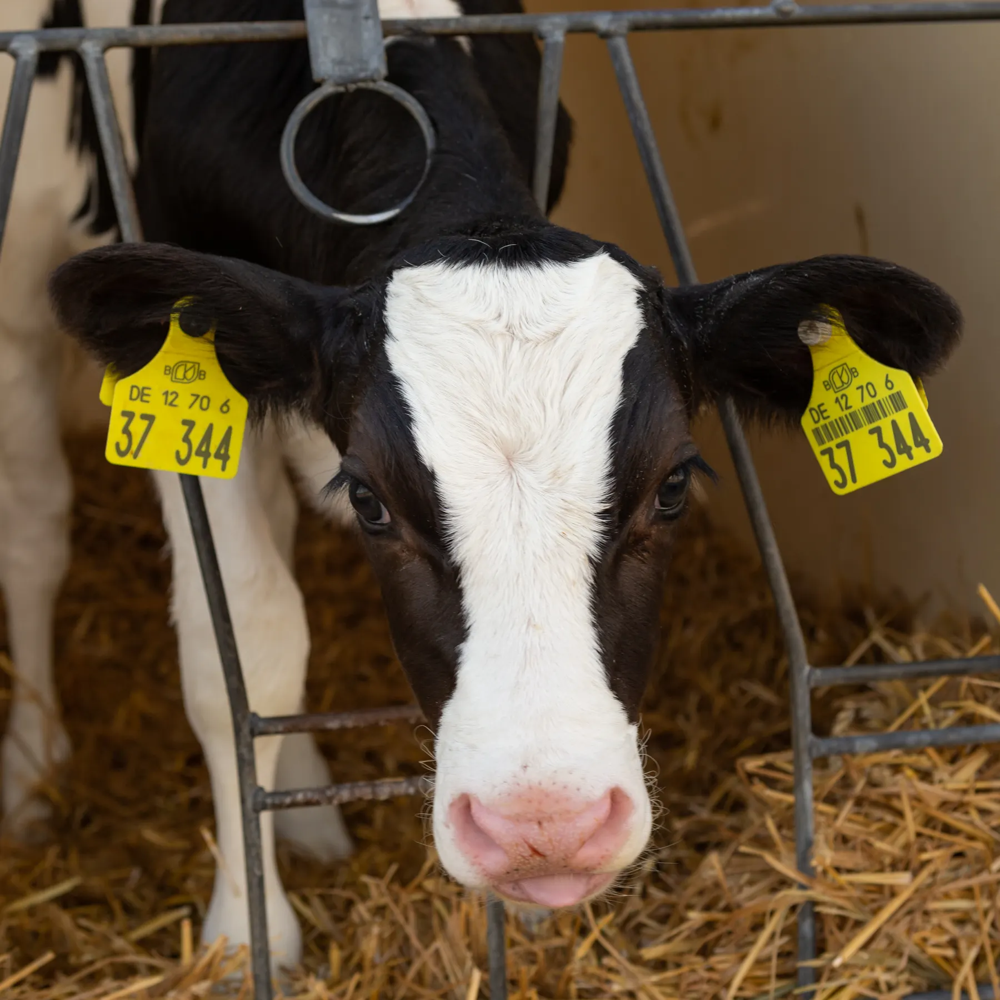

- Startseite
- Hof erleben
Kommt vorbei! Die Kälbchen warten schon.
Auf unserem Hof in Schmargendorf erlebt ihr, wo eure Milch herkommt. Mit Hofcafé, Milchladen, Hofführungen, Spielbereich und viel Uckermark drumherum.

Hofcafé & Milchladen
Genießt Milchspezialitäten, Kaffee und Kuchen mit Blick über die Uckermark im Biosphärenreservat Schorfheide-Chorin. Mit etwas Glück schaut ihr den Kühen beim Grasen auf der Weide zu, und eure Kinder können ein Kälbchen streicheln.
Im Milchladen nehmt ihr alle Hemme-Produkte frisch für zuhause mit, dazu Spezialitäten von regionalen Erzeugern.
Mittwoch bis Sonntag, 11 bis 18 Uhr

Hofführungen
Werft einen Blick hinter unsere Ku(h)lissen.
Für alle
Ohne Voranmeldung. Jeden 1. Sonntag im Monat von April bis Oktober, um 14:30 Uhr.
Ohne Anmeldung14:30 UhrFür Gruppen
Mit Voranmeldung, bis zu 30 Personen, Dienstag bis Freitag ab 10:30 Uhr. Mit Verkostung unserer frischen Milchprodukte, auf Wunsch auch Kuchen, Kaffee und Tee.
Bis 30 PersonenDi bis FrFür Kinder
Mit Voranmeldung, bis zu 30 Kinder, Montag bis Freitag ab 8 Uhr. Jedes Kind bekommt ein Milchgetränk nach Wahl.
Bis 30 KinderMo bis Fr
Anmeldung beim Milchtelefon: 03331 252525, Montag bis Freitag, 8 bis 15 Uhr.
Der Erlebnishof für Familien
Wir sind ein beliebtes Ausflugsziel für Familien an Wochenenden und in den Ferien geworden. Darauf richten wir uns aus.

Maislabyrinth
Vier Hektar Mais, drei Meter hoch, mit Quiz-Stationen und einem Hochsitz als Aussichtsturm. Das Wegenetz wurde schon bei der Aussaat per GPS angelegt.

Spielen und Toben
- Outdoor-Spielbereich mit Matschküche
- Buddelberg und Heu-Stall
- Aussichtsturm
- Sprunghügel, ein Riesen-Hüpfball

Rundweg, Archehof und Bauerngarten
Alte Haustierrassen auf dem Archehof und alte Sorten im Bauerngarten zum Kennenlernen, Schnuppern und Naschen.
Alle Angebote auf dem Erlebnishof sind kostenfrei.
KuhCam: unsere heimlichen Stars
Mit unserer KuhCam lasst ihr den Blick über unseren Hof wandern und beobachtet unsere Kühe auf der Weide und im Stall. Das Wohl unserer Tiere liegt uns am Herzen, davon könnt ihr euch hier selbst überzeugen.
Zwischen Mai und Oktober sind die Kühe auf der Weide.

Natur rund um den Hof
Buchenwald Grumsin
Geführte Touren durch das UNESCO-Weltnaturerbe gleich nebenan: „Ein Urwald entsteht“ und „Lebendiges Welterbe“.
Altstadt Angermünde
Verbindet euren Besuch mit einem Ausflug in die historische Altstadt.
Wandern und Radfahren
Weitere Touren und Ausflugsziele bei Angermünde Tourismus, angermuende-tourismus.de.
Öffnungszeiten & Anfahrt
Hofcafé & Milchladen
Mittwoch bis Sonntag, 11 bis 18 Uhr
Hemme Milch GmbH & Co. KG
Heideweg 4
16278 Angermünde, OT Schmargendorf
Mit Bahn und Bus
RE3 ab Berlin Hauptbahnhof Richtung Stralsund oder Schwedt bis Angermünde. Von dort fährt von April bis Oktober der WelterbeBus bis zur Haltestelle „Hemme Milch Schmargendorf“.
Oder ihr bucht bis 60 Minuten vor Abfahrt einen Rufbus der UVG.